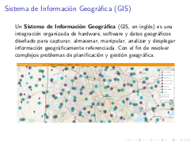
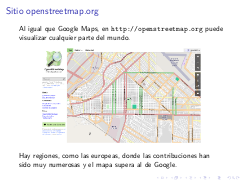
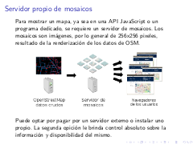
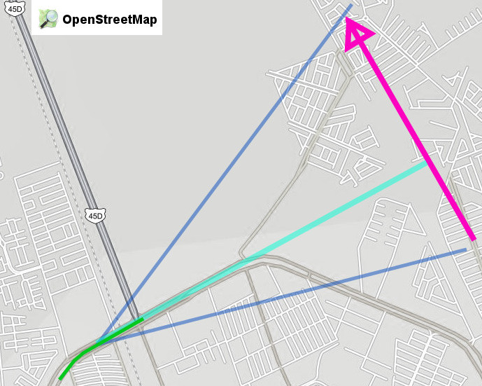

Colección de ideas.
2014-01-30 10:20 - guivaloz
CentOS es una distribución GNU/Linux mantenida por la comunidad a partir del código libre de Red Hat. De una forma práctica, CentOS es lo mismo que Red Hat pero sin su marca comercial ni soporte técnico de paga. La estabilidad y confiabilidad de CentOS lo hacen la mejor opción para sistema operativo base de un servidor cuyo fin sea virtualizar. Recientemente se ha anunciado el apoyo directo de Red Hat a la comunidad de CentOS; de lo cual esperamos muchas ganancias para todos.
2014-01-21 19:20 - guivaloz
- GIT es un software de Control de Revisiones. Esto significa que es capaz de recordar los estados previos en que se hayan guardado los muchos archivos de un sistema.
- GIT también se puede comunicar con computadoras y servidores remotos, para lograr así la descarga, sincronización y actualización en un solo comando.
- GIT es Software Libre con licencia GPL versión 2. Usado por los desarrolladores del kernel Linux y diseñado por Linus Torvalds.
2014-01-19 20:00 - guivaloz
  
El pasado 14 de diciembre de 2013 expuse en el Grupo de Usuarios de GNU/Linux de la Laguna el tema OpenStreetMap. De éste material extraigo estos apuntes:
2014-01-14 15:55 - guivaloz

Les informo que mi esposa Rosy y su servidor veníamos conduciendo la mañana de hoy por el Periférico (en Gómez Palacio, Durango, México) y antes de subir el paso a desnivel que está frente a Soriana Hamburgo vimos un bólido surcar el cielo.
Rosy me ha dado dos notas regionales sobre el fenómeno, además de otra por parte de Sergio:
- http://conexiontotal.mx/2014/01/14/meteorito-cae-en-saltillo/
- http://www.vanguardia.com.mx/caeovniensaltilloautoridadeslobuscan-1923456.html
- http://www.elsiglodetorreon.com.mx/noticia/952770.reportan-caida-de-meteorito-en-saltillo.html
¡Fue maravilloso! ¡El más grande y fantástico que haya visto! Lástima que iba manejando y no lo esperábamos (para tratar de tomar video), como suele ocurrir.
2014-01-13 09:00 - guivaloz
Escribo, en esta ocasión después de mucho tiempo, para hacer de su conocimiento una oferta de trabajo y para que me ayuden a propagar mi llamado.
Tengo una oferta de trabajo para un desarrollador; trabajará conmigo, aprenderá mucho y será estable (el trabajo) por largo tiempo (claro, si hace lo que tiene hacer). Sueldo ~7K.
Deberá aprobar los exámenes que aplicaré.